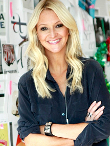

Zanna Roberts Rassi
.

Es relativamente fácil ingresar al campo de la carrera donde los miembros de su familia han creado un trasfondo, pero se necesita un valor real para comenzar desde abajo y llegar a la cima de la profesión. Lo mismo es la historia de la editora de modas británica, Zanna Roberts Rassi, quien a su vez se dirigió a la editora de modas senior de 'Marie Claire'. También ha fundado la compañía de cosméticos Milk Makeup junto con su esposo.
Carrera De Trabajos De Roberts
Roberts Rassi decidió ingresar a la industria del entretenimiento como diseñador de moda. Su pasión por el diseño de moda la obligó a abandonar su hogar a la edad de dieciocho años. Después de que se fue de su casa, fue a Londres para realizar una pasantía para una revista y luego se mudó a la ciudad de Nueva York. La diseñadora de moda, Rassi, comenzó su trabajo como asistente y fue promovida a su papel actual como editora de moda senior en 'Marie Claire US' y también como corresponsal de moda para E! Noticias. La diseñadora de modas también hizo su aparición en el reality show 'Project Runway All Stars' en el que juega como mentora de los concursantes y asesora de la cadena minorista estadounidense Target. El editor de moda fue nominado para el Daytime Emmy Award por su sobresaliente programa de noticias de entretenimiento en 2015.
Rassi comparte gemelos con su marido!
La editora de moda británica es una mujer casada ahora. Estaba casada con su novio a largo plazo, Mazdack Rassi en el año 2010. Rassi comenzó a salir con su novio que se convirtió en su cónyuge, Mazdack Rassi en 2007. La pareja estuvo junta por tres años y decidió convertirse en esposo y esposa en el 2010. El marido de la editora de moda, Mazdack es cofundador de Milk Studios, y ella lo ayudó mucho como un compañero para convertir a la industria en la meca de la moda que es hoy en día. La pareja comparte gemelas juntas y, a menudo, comparten sus momentos felices en los sitios sociales. La madre de dos niños celebra el cumpleaños de sus hijas el 31 de marzo y reside en la ciudad de Nueva York con su hermosa familia de cuatro. En agosto de 2018, Zanna y su esposo Mazdack se fueron de viaje con sus hijos. La familia de cuatro miembros voló del Aeropuerto Internacional John F. Kennedy para saborear sus vacaciones. Además, en septiembre de 2018, apreciaron el paseo en bote en el suburbio del mar. En su pequeño bote con la bandera estadounidense, la hija de la pareja disfrutó de las vistas de los mares de coral sentados junto a su madre. Mientras tanto, Mazdack, quien se puso una camiseta blanca en su apariencia de barba, compartió un selfie de su familia en Instagram. Después de su viaje romántico, Zanna asistió a la alfombra roja de NYC Ballet en el Lincoln Center con su esposo Mazdack el 29 de septiembre de 2018. El dúo llegó como co-anfitrión de las instituciones de la Ciudad de Nueva York en el Lincoln Center.
Su breve biografía
La editora de moda británica, Zanna Roberts Rassi, nació en Manchester, Reino Unido y celebra su cumpleaños el 22 de febrero. Es una nacional inglesa y se origina en la etnia blanca. La editora de moda está dotada de la altura adecuada y se adapta idealmente a su marido.
Regresar